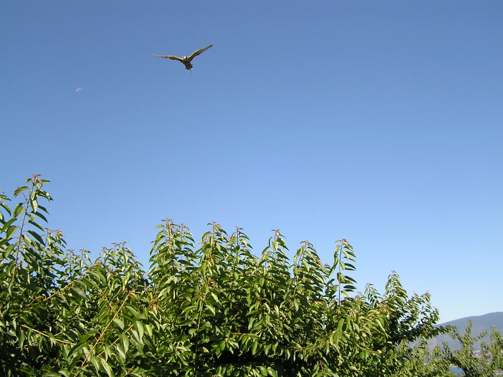

Rehabilitácia vtákov
Starostlivosť o handicapované živočíchy a návrat do prírody
Jedným z cieľov združenia je odborná a komplexná starostlivosť spojená s odchytom živočíchov a v prípade potreby aj liečenie handicapovaných živočíchov a ich príprava na návrat do prírody.

Naše ciele
Čomu sa združenie venuje
Ochrana a podpora dravých vtákov a sov na území Slovenskej republiky a zvyšovanie ich počtu vo voľnej prírode.
Odborná a komplexná starostlivosť spojená s odchytom živočíchov a v prípade potreby aj liečenie handicapovaných živočíchov a ich príprava na návrat do prírody.
Spolupráca s podobne zameranými domácimi a zahraničnými inštitúciami, organizáciami a orgánmi štátnej správy.
Našli ste poraneného dravca?
Ak ste našli poraneného dravca, nemanipulujte s ním zbytočne, zabezpečte ho pred psami a mačkami a čo najskôr nás kontaktujte. Poradíme vám, ako postupovať.
Zavolať 0907 419 111
Veterinárna starostlivosť
Ako spoznať chorého dravca, čo patrí do lekárničky a ktorým chorobám predchádzať
Prečo dravce potrebujú pomoc
Najčastejšie ohrozenia, ktorým čelia
Elektrické vedenia
Na 22 kV vedeniach ročne hynie veľké množstvo vtákov. Odporúčajú sa ochranné konštrukcie v tvare T, ktoré sú účinnejšie než bežné hrebene.
Ilegálny odstrel a pasce
Dravce sú strieľané či chytané do pascí, najmä v nížinách počas migrácie, často v snahe chrániť poštové a pretekárske holuby.
Jedy a chemizácia
Otrávené návnady a plošné používanie rodenticídov ohrozujú sokoly, ktoré požijú otrávenú korisť.
Vyrušovanie a doprava
Lesné a poľné práce, turistika, horolezectvo, poľovníctvo, motorizmus či výstavba znižujú úspešnosť hniezdenia. Sokoly sa často stávajú obeťami áut pri konzumácii zvierat zrazených na ceste.
Informácie na vyžiadanie
Špecifické informácie poskytujeme individuálne
Niektoré podrobnosti – napríklad povolenia, osvedčenia a potvrdenia – nezverejňujeme na webe. Všetky dokumenty Vám na vyžiadanie predložíme. Stačí nám napísať, o čo máte záujem.
Žiadosť vybavujeme osobne, preto prosíme o stručné uvedenie dôvodu a kontaktu.